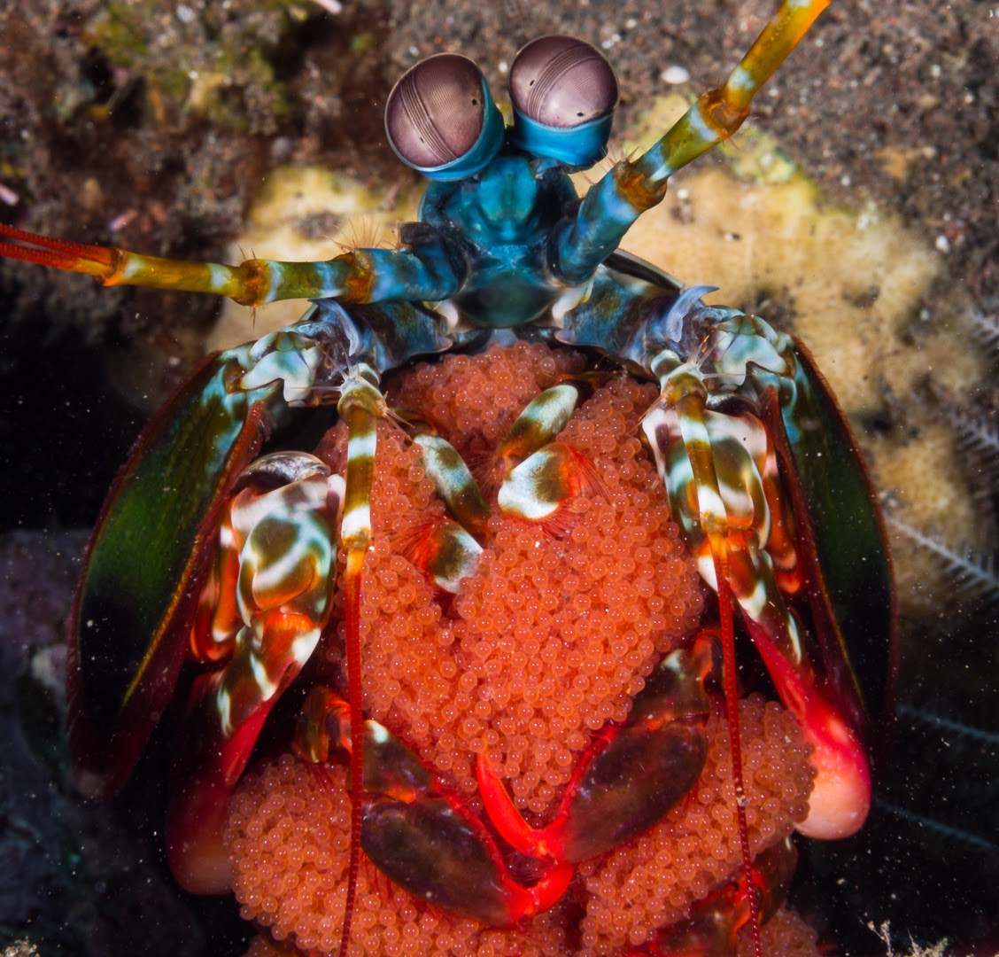
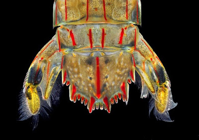

Fatos sobre o Stomatopoda
A lacraia-do-mar

Odontodactylus scyllarus ou Stomatopoda, chamados popularmente de tamarutacas ou de lacraias-do-mar no Brasil, é uma ordem de crustáceos marinhos da subclasse Hoplocarida, que agrupa cerca de 400 espécies, caracterizadas principalmente pela morfologia da segunda pata torácica, que é modificada em apêndice subquelado, lembrando uma pata de louva-a-deus.
Reprodução
A reprodução destes animais é um drama, pois os machos que desejam cortejar as fêmeas correm sérios riscos de serem mortos e devorados por suas dulcineias. Os machos das maiores espécies se aproximam com muita cautela das fêmeas e esperam para que esta se torne receptiva, eles costumam mostrar suas escamas laterias, estruturas que portam padrões e cores, como um tipo de linguagem visual e então entra de vez na toca. O acasalamento dura poucos minutos ou segundos e logo após a cópula o macho deve fugir pela entrada da toca ou por um dos dutos secundários das tocas das fêmeas rapidamente, caso contrário será devorado. Após a cópula a fêmea cuidará dos ovos por algum tempo, mantendo-os limpos e livres de parasitas, e só então são liberados nas correntes.
Anatomia
A tamarutaca apresenta uma anatomia comparável ao que vemos em camarões e lagostas. Possuem uma carapaça grande e muito dura que serve para proteger a cabeça e as primeiras articulações do abdome, logo apresenta na parte posterior uma parte segmentada coberta por duras placas de quitina e ao final apresenta uma nadadeira característica dos crustáceos, o télson, que nestes animais possui uma finalidade á mais do que somente ajudar na locomoção. A carapaça que protege a cabeça, órgãos vitais e patas e membros mais frágeis é dura e muito resistente aos golpes de outras tamarutacas, especialmente nos indivíduos mais velhos, mas eles se tornam vulneráveis durante a ecdise, ou troca de pele, quando tornam-se moles e incapazes de se alimentar por algum tempo.